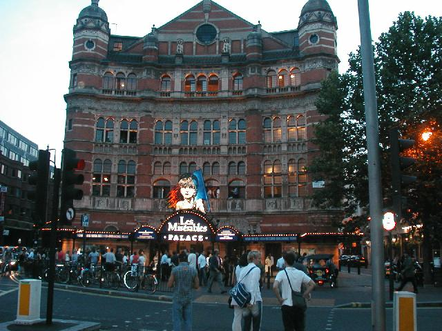

Je Suis Les Mis

Le Mis at Picadilly Circus
This escapade reminded
me how little I like musical theater. Le Mis is one of the best shows,
but it dragged on too long, and it was hard to understand because it was
sung in English. I left gratefully. After dinner I wandered back
to see people streaming from the theater. I'd left at
intermission.